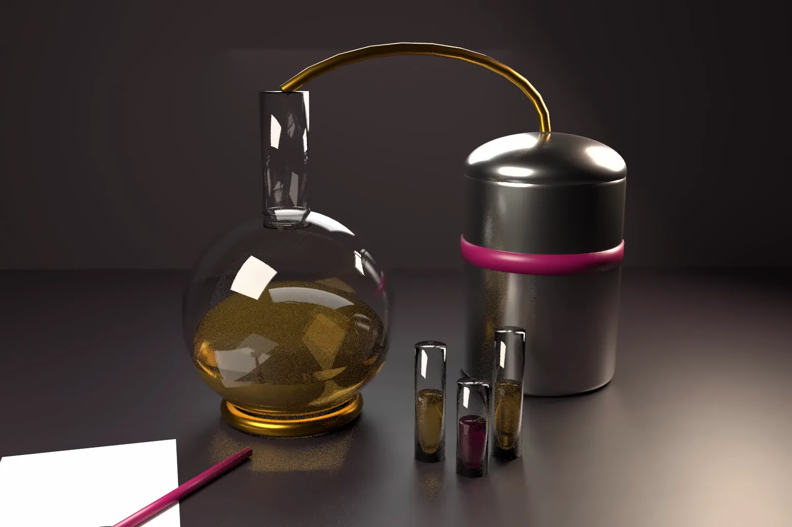

How does a patentee prove process patent infringement in India when the process runs inside a rival's plant? On 7 October 2026 the Calcutta High Court gave a clear answer at the interim stage. In NOCIL Ltd v Finorchem Ltd, it placed the burden on the defendant to show that its process was different.
The court also said that a company planning to use a process close to a granted patent should clear the way first. It should not launch and wait to be sued. This article explains the ruling and compares the position in the United States and Europe.
- In NOCIL Ltd v Finorchem Ltd and another, GA-COM/1/2024 in IP-COM/25/2024, Justice Ravi Krishan Kapur of the Calcutta High Court granted interim relief on 7 October 2026.
- The suit concerned NOCIL's Indian process patents for making 4-ADPA, an intermediate used to make rubber antioxidants. A former NOCIL employee bound by a confidentiality agreement was the second defendant.
- The court held that Finorchem's process was prima facie equivalent to the patented process. It held that it was for Finorchem to prove that its process was different.
- Finorchem had not used any of the statutory routes to challenge the patents before planning its launch. The court said a new entrant must clear the way, and treated the failure as a factor against Finorchem.
- Shifting process disclosures and a later amendment to Finorchem's own patent application counted against it. The court called the amendments an attempt to evade liability.
The patents and the dispute
NOCIL relied on three Indian patents: IN 341922, IN 366559 and IN 389262. Each claims a process for making 4-ADPA. Two came from PCT applications with granted US equivalents. NOCIL said it had worked the processes for more than a decade.
The second defendant had worked at NOCIL from 1987 until 2020 and retired as Deputy General Manager, Process Technology. In 2012 he signed a non disclosure agreement that referred to the 4-ADPA processes.
The suit was triggered by an environmental impact and risk assessment report that Finorchem filed for a planned 4-ADPA plant. In November 2025 the court directed Finorchem to disclose proof of its manufacturing process. Finorchem had not begun commercial production when the court ruled.
What the court decided on infringement
The court compared the process in Finorchem's report with NOCIL's own report. It found them virtually identical and saw no reason for such verbatim reproduction. It listed twelve process steps common to both and noted that the end product was the same.
Finorchem pointed to differences in wording, in the type of reactor and in making a second hydrogenation step optional. The court applied the pith and marrow approach. Unessential features and trifling variations are ignored. It held that the processes, the ingredients and the outcome were equivalent.
On proof, the court held that it was for Finorchem to prove that its process was different from the patented process. It rejected the argument that NOCIL first had to establish validity before the burden could shift. This reflects section 104A of the Patents Act, 1970.
Section 104A applies where the patent covers a process for obtaining a product. The court may direct the defendant to prove that its process is different. Two routes lead there. The first is where the patented process is for obtaining a new product. The second is where the identical product is likely made by the process and the patentee could not find the actual process through reasonable efforts. The patentee must first prove that the products are identical. The court must not force disclosure of manufacturing or commercial secrets where that would be unreasonable.
Validity at the interim stage
The court accepted that grant of a patent is not prima facie proof of validity. A defendant must still raise a credible challenge, not one that is fanciful or moonshine. It gave weight to the grant, the patents' long and undisputed working, and the outcome of related challenges abroad.
The court did not allow Finorchem to combine different prior art documents to plead anticipation. It also held that filing a counterclaim for revocation does not by itself prevent interim relief.
Clearing the way
This is the most quoted part of the ruling. The court said a new entrant must take steps to clear the way before starting its activities, rather than waiting to be sued. It noted that Finorchem had not used any statutory route. These include pre grant and post grant opposition under section 25, a declaration of non infringement under section 105 and revocation under section 64.
The court relied on English authority, including SmithKline Beecham v Generics (2001) and AstraZeneca v Glenmark [2025] EWCA Civ 480. It also cited the Delhi High Court in Eisai v Satish Reddy. It treated the failure to clear the way as one factor at the prima facie stage. It did not hold that a launch without a prior challenge is itself unlawful.
Conduct, disclosure and the former employee
Finorchem had given three versions of its process. The court found the first description false on the catalyst used. Finorchem abandoned two of its own process patent applications. In February 2026 it applied to amend its patent application. It replaced a molar ratio of 6:1 to 10:1 with a "predetermined ratio" and made the second hydrogenation step optional. The court saw this as an attempt to evade infringement.
On confidentiality, the court held that the agreement referred specifically to the 4-ADPA processes and was not a general clause. It said an employee or former employee cannot take advantage of trade secrets. It found that Finorchem prima facie intended to procure a breach of the agreement. The court held that claims in patent and in confidence are not mutually destructive. Information can keep its confidential quality even if parts of it are public.
The court found the defendants secretive and held they had not come with clean hands. It granted the interim prayers in the notice of motion.
What the ruling does not decide
- It is an interim order. Infringement and validity remain for trial with expert evidence.
- It does not hold that every defendant must oppose or seek revocation before launch. Clearing the way is a factor in the balance, not a separate cause of action.
- It does not analyse in detail which limb of section 104A applied. The burden finding rests on the court's reading of the evidence at this stage.
The United States
US law has a similar burden rule. Under 35 U.S.C. 295, a product is presumed to have been made by the patented process if the court makes two findings. There must be a substantial likelihood that it was so made. The patentee must also have tried and failed to find out the actual process. The defendant must then prove otherwise.
US courts do not treat a failure to clear the way as a formal factor for a preliminary injunction. The patentee must show likely success, irreparable harm, a favourable balance of hardships and the public interest. Clearance matters mainly for damages. Deliberate infringement can lead to enhanced damages under 35 U.S.C. 284 after Halo v Pulse (2016). Under 35 U.S.C. 298, failing to obtain advice of counsel cannot itself be used to prove wilful infringement. Companies clear the way through inter partes review, post grant review and declaratory judgment actions.
Europe and the United Kingdom
Article 34 of the TRIPS Agreement requires a reversed burden for process patents in defined cases. Europe follows it. Article 55 of the UPC Agreement presumes that an identical new product was made by the patented process. The presumption also applies where there is a substantial likelihood and the patentee could not find the actual process. The defendant's trade secrets are protected. In the UK, section 100 of the Patents Act 1977 reverses the burden for new products.
At the UPC, the court weighs the interests of both parties when it decides on provisional measures. This includes the harm that granting or refusing an injunction may cause. In the UK, failure to clear the way is a well known factor in the balance of convenience, especially for generic medicines. An entrant can seek revocation or a declaration of non infringement before launch.
China and Japan also reverse the burden for processes that make new products. See Article 66 of the Chinese Patent Law and Article 104 of the Japanese Patent Act.
Practical steps for patentees and new entrants
- Patentees should claim the process with its essential features in the main claim. Optional steps and exact ratios belong in dependent claims, so that small changes do not avoid the patent. Our note on drafting claims for commercial value explains how to plan for proof of infringement.
- Patentees should watch public filings such as environmental reports and rivals' patent applications. These may reveal a process long before launch.
- New entrants should obtain a freedom to operate review and consider opposition, revocation or a declaration of non infringement before investing in a plant.
- Keep process disclosures consistent across regulators, the Patent Office and the court. Shifting accounts damage credibility.
- Employers should use confidentiality agreements that name the specific processes. India has no separate trade secrets statute, so contract and equity carry the weight.
For help with process claims, oppositions and infringement analysis, see our patent drafting, search and prosecution services.
Frequently asked questions
Who has the burden of proof in a process patent infringement case in India?
Under section 104A of the Patents Act, the court can direct the defendant to prove that its process is different. This applies where the patented process makes a new product. It also applies where identical products are likely made by the process and the patentee cannot find out the process used. The patentee must first show the products are identical.
What does clearing the way mean in patent law?
It means challenging a patent before launching a product or process that may infringe it. In India this can be an opposition, a revocation petition or a declaration of non infringement. In NOCIL v Finorchem, failing to do this counted against the defendant at the interim stage.
Can a former employee be restrained from using a process in India?
Yes, where a confidentiality agreement covers the specific process and there is evidence of misuse. In NOCIL v Finorchem, the court found that the agreement referred to the 4-ADPA processes and was not a general clause.
Official source
- NOCIL Ltd v Finorchem Ltd and another, Calcutta High Court, GA-COM/1/2024 in IP-COM/25/2024, judgment of 7 October 2026 (copy of the judgment)
- The Patents Act, 1970 on India Code (sections 25, 64, 104A and 105)
- 35 U.S.C. 295, presumption that a product was made by a patented process
- 35 U.S.C. 298, advice of counsel
- Agreement on a Unified Patent Court, Article 55
- TRIPS Agreement, Article 34